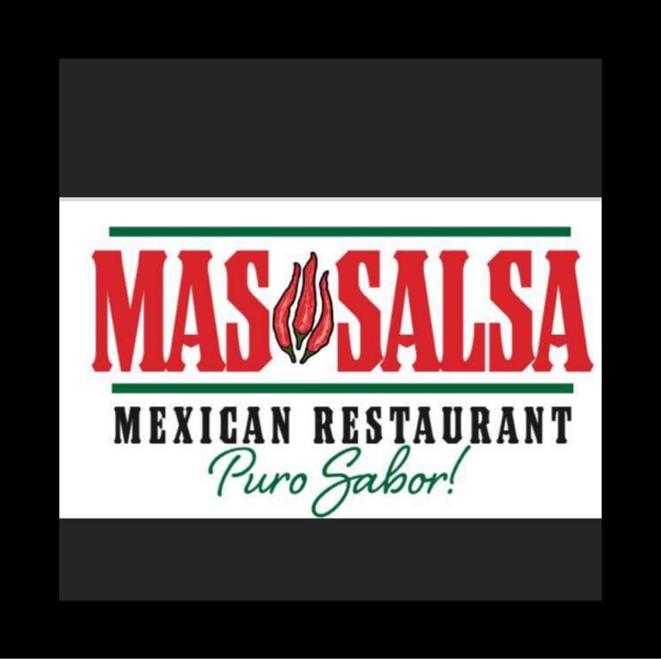

Restaurant info
Mas Salsa Tex Mex Restaurant
Tex-Mex favorites, margaritas, and live music in Springtown. This demo treats the restaurant like a real business, not a placeholder page.
Dine-in
Outdoor seating
In-store pickup
